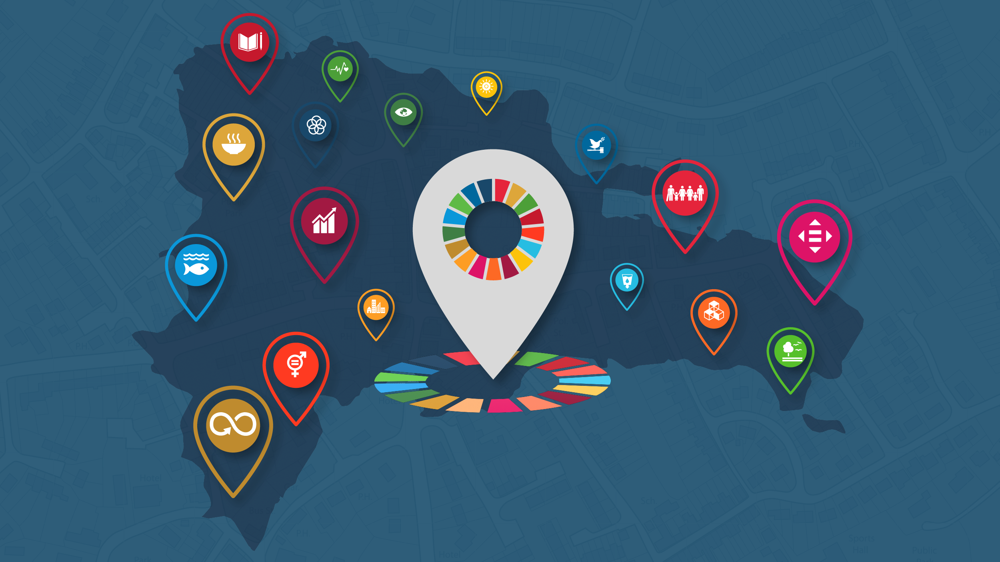

A DATA DE CONCLUSÃO DE TODAS AS ODS.
Os 193 Estados membros da ONU, incluindo o Brasil, comprometeram-se a adotar a chamada Agenda Pós-2015,
considerada uma das mais ambiciosas da história da diplomacia internacional. A partir dela, as nações trabalharão para
cumprir os Objetivos de Desenvolvimento Sustentável (ODS). Os ODS representam um plano de ação global para eliminar a
pobreza extrema e a fome, oferecer educação de qualidade ao longo da vida para todos, proteger o planeta e promover
sociedades pacíficas e inclusivas até 2030.

Estão baseados nos compromissos para as crianças e os adolescentes nas áreas
de pobreza, nutrição, saúde, educação, água e saneamento e igualdade de gênero contidos nos precursores dos ODS, os Objetivos
de Desenvolvimento do Milênio. Os ODS também incluem novos objetivos e metas relacionados à proteção da criança e do
adolescente, à educação infantil e à redução das desigualdades. Essa nova agenda apresenta uma oportunidade histórica
para melhorar os direitos e o bem-estar de cada criança e cada adolescente, especialmente os mais desfavorecidos, e garantir
um planeta saudável para as meninas e os meninos de hoje e para as futuras gerações. Não pode haver desenvolvimento sustentável,
prosperidade ou paz sem equidade – oportunidades justas para cada criança e cada adolescente.
Se as crianças e os adolescentes mais desfavorecidos não compartilham desse progresso, ele não será sustentável. A nova agenda tem o potencial de definir o desenvolvimento global em um caminho mais equitativo. Ela dá a oportunidade de se oferecer a todas as crianças e todos os adolescentes as ferramentas, as habilidades e os serviços de que necessitam para sobreviver, prosperar e percorrer a maior parte de sua vida. Os progressos para alcançar as metas serão avaliados levando-se em consideração se as intervenções estão reduzindo a desigualdade e chegando às crianças, aos adolescentes e às comunidades mais vulneráveis. Dados consistentes e desagregados desempenham um papel crucial na identificação e no alcance das meninas e dos meninos que estão às margens da sociedade. Crianças, adolescentes e jovens precisam de um espaço para se envolver com aqueles que vão colocar os ODS em prática. As pessoas jovens podem ajudar a mudar sua própria vida e suas comunidades – elas têm ideias, energia ilimitada para a ação e a maior participação no futuro. Capacitadas e fortalecidas pelo conhecimento e pela consciência dos seus direitos e das necessidades urgentes do mundo, elas podem ajudar a garantir que os gestores cumpram os compromissos assumidos.
